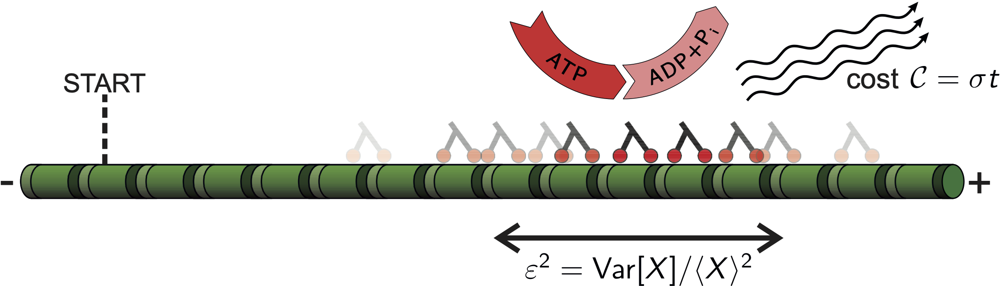
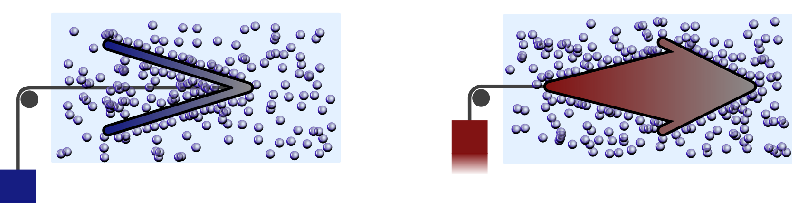
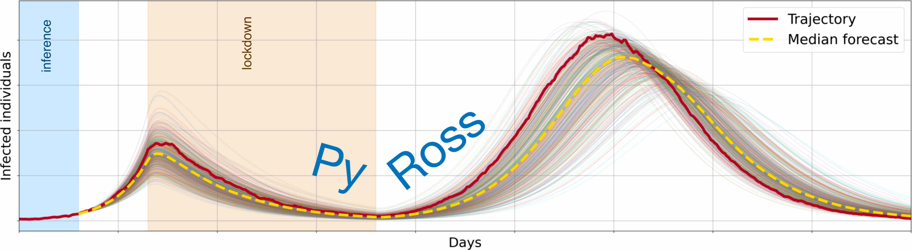

Stochastic Thermodynamics
A common theme to my research is stochastic thermodynamics. It uses the mathematical language of stochastic processes to model the evolution of the state of a system and of observables like heat, work or entropy. Importantly, a stochastic dynamics needs to be constrained by the underlying laws of physics. One can then explore how these physical constraints genrally shape the statistics of observables.
[Thermodynamics of precision] [Active matter] [Epidemiological modeling] [Fluctuation theorems]
Thermodynamics of precision
Driven systems in a thermal environment can be characterised by their uptake of energy and by the precision observed for some output variable. The thermodynamic uncertainty relation (TUR) expresses a trade-off between these quantities: Precision comes at a minimal energetic cost. I have contributed to the mathematical understanding of this relation in terms of large deviation theory. Moreover, some of my work explores the implications of the TUR for a variety of systems, such as heat engines, molecular motors, or clocks. The TUR holds true for systems on microscopic scales, but, as a simple model for a pendulum clock reveals, inertial dynamics on macroscopic scales can lead to precision beyond the limits set by the TUR.
Selected publications:
- Universal bounds on current fluctuations (2016)
- Universal trade-off between power, efficiency, and constancy in steady-state heat engines (2018)
- Classical pendulum clocks break the thermodynamic uncertainty relation (2022)
Active matter
Active matter is a class of non-equilibrium systems, which consist of independently self-driven particles. Following the principles of stochastic thermodynamics, we can characterise the energetic properties of active matter systems. I am particularly interested in how active matter interacts with passive surroundings, how these interactions can be used to design engines working with active matter, and how efficient such engines can be.
Selected publications:
- Entropy production of active particles and for particles in active baths (2018)
- Autonomous engines driven by active matter: Energetics and design principles (2019)
- Second law for active heat engines (2022)
Epidemiological modelling
In response to the outbreak of the COVID-19 pandemic, I have contributed to the programme Rapid assistance in modelling the pandemic (RAMP). I have worked on the inference of models and model parameters from data, taking into account statistical fluctuations and systematic errors due to changing testing capacities. I was a core developer of the PyRoss software package and have used this software to infer changes in the disease dynamics from publicly available data.
Selected publications:
- Efficient Bayesian inference of fully stochastic epidemiological models with applications to COVID-19 (2021)
- Bayesian inference across multiple models suggests a strong increase in lethality of COVID-19 in late 2020 in the UK (2021)
Fluctuation theorems
Fluctuation theorems are classic results of stochastic thermodynamics. They compare forward fluctuations of observables related to entropy production with their exponentially less likely backward fluctuations. Applications of fluctuation theorems often require the observation of all degrees of freedom of a system. In my work I have explored ways to put fluctuation theorems to use in scenarios where some relevant degrees of freedom cannot be observed.